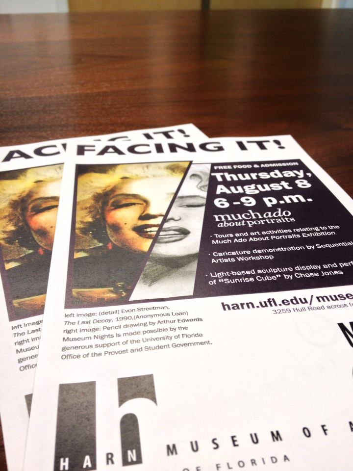
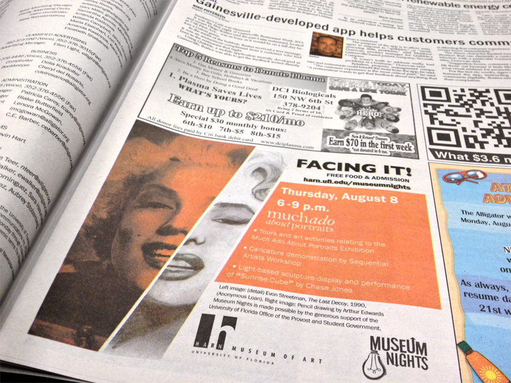
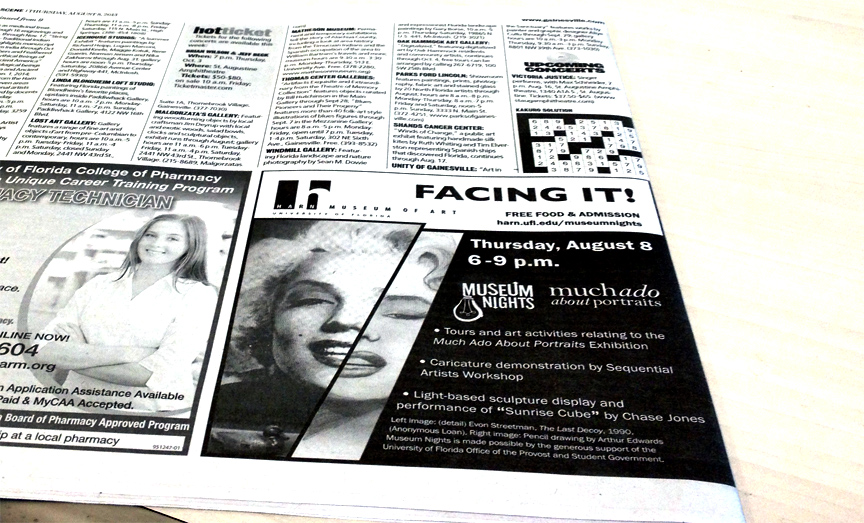
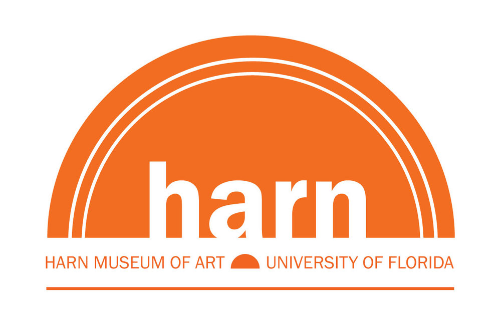
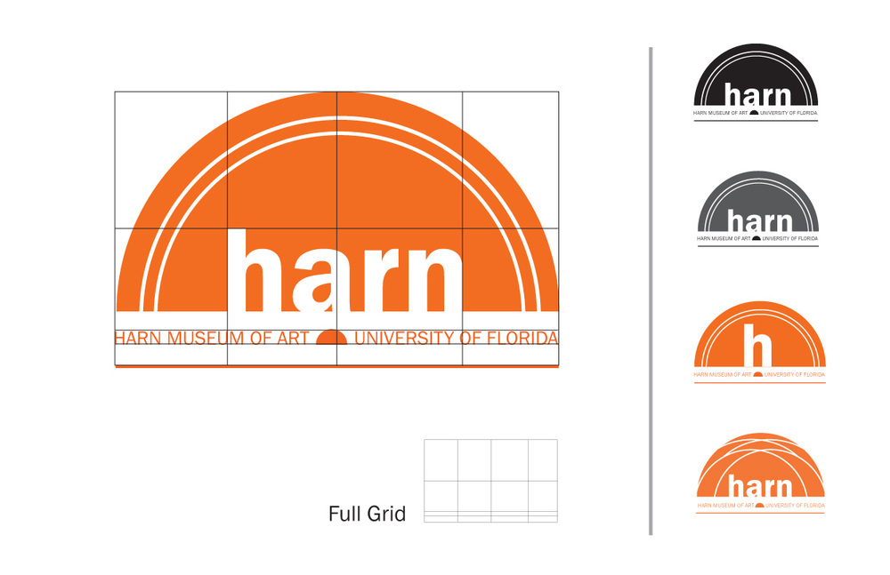
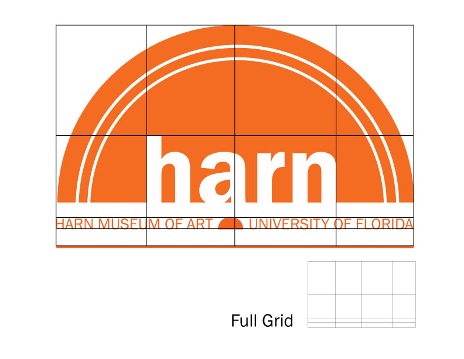
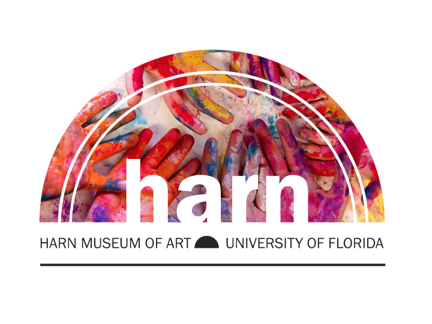
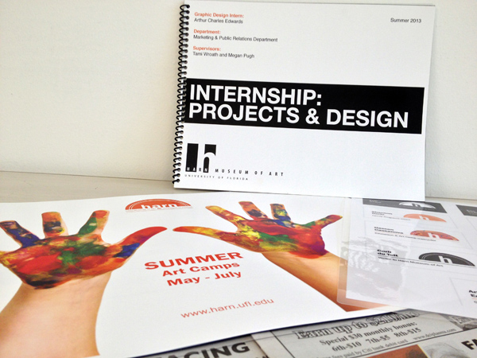
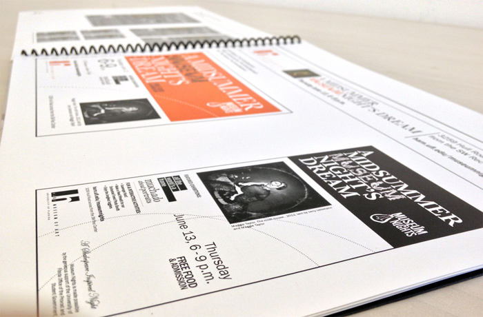

The Harn Museum
Harn Museum of Art Internship:
Working at the Harn Museum of Art has been simply fantastic. All the professional experiences have improved my flexibility as a designer. I was responsible for creating marketing materials and informational designs for the museum's events.
Internship Presentation & Branding Design:
The end of my internship I took the opportunity to share my experience at the Harn Museum. I explained the design behind different projects and gave my own interpretation of the branding design. This allowed me to share various marketing ideas with the directors and other staff members. (You will see presentation as you scroll)









